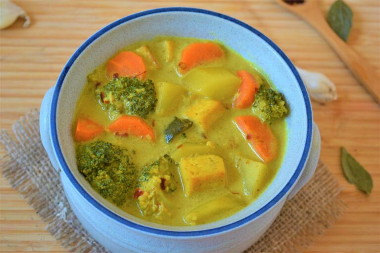

Vegan Curry

Meat and dairy free curry for vegans
A warm and heart curry filled with healthy vegetables without the meat and dariy products
An easy to make and prepare meal with simple ingridients with minimal equipment and time
Ingredients
- Rice (optional)
- 50g curry powder
- 2 pinches of salt
- 2 pinches of black pepper
- 2 pinches of brown sugar
- 100ml water
- 300ml diced potatoes
- 200ml diced carrots
- 100ml brocolli
Steps
- Steam rice if you want to eat with rice
- Steam potatoes, carrots and brocolli until soft
- Add curry powder, salt, black pepper, brown sugar into cooking bowl
- Mix spices with water until curry becomes between watery and thick
- Add in steamed vegetables into the curry and mix